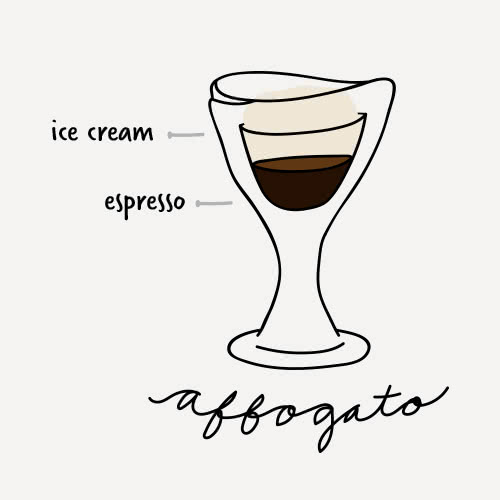
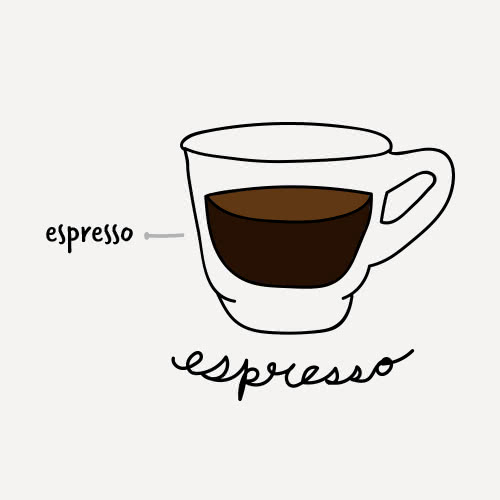
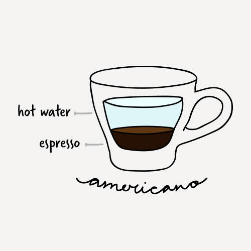
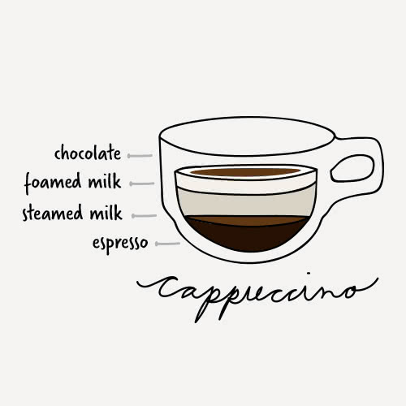
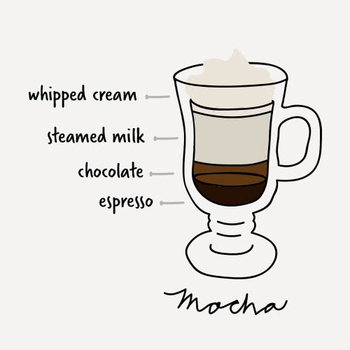
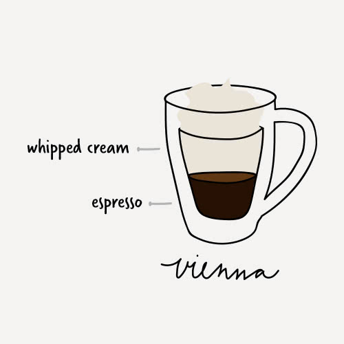

|  |
affogatoAffogatos are more for a dessert coffee than a drink you would find at a cafe, but they can add a fun twist to your coffee menu. They are made by pouring a shot of espresso over a scoop of vanilla ice cream to create a sweet after-meal treat. |
|  |
EspressoThe espresso, also known as a short black, is approximately 1 oz. of highly concentrated coffee. Although simple in appearance, it can be difficult to master |
|  |
AmericanoAmericanos are popular breakfast drinks and thought to have originated during World War II. Soldiers would add water to their coffee to extend their rations farther. The water dilutes the espresso while still maintaining a high level of caffeine. |
|  |
CappuccinoThis creamy coffee drink is usually consumed at breakfast time in Italy and is loved in the United States as well. It is usually associated with indulgence and comfort because of its thick foam layer and additional flavorings that can be added to it. |
|  |
MochaThe mocha is considered a coffee and hot chocolate hybrid. The chocolate powder or syrup gives it a rich and creamy flavor and cuts the acidity of the espresso. |
|  |
ViennaAffogatos are more for a dessert coffee than a drink you would find at a cafe, but they can add a fun twist to your coffee menu. They are made by pouring a shot of espresso over a scoop of vanilla ice cream to create a sweet after-meal treat. |